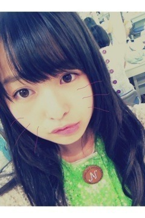

| 2012/08 12 Sun | 203回目*marika |
いつも読んでくださってる方、
初めて読んでくださった方、
コメントしてくださった方、
ありがとうございます！
おはまりっか。
*****HaPPy BirThDAy*****
ゆきな♡2012.8.12
乃木坂の変顔女王

もう、何回も言ってるけど
ゆきなには負ける笑
大人しそうに見えておもしろいの。
学業が大変で今なかなか
Lesson来れないのに、
振り付けを完璧におぼえられるの
すごいなって思う...
本当におめでとう‼
ゆきなだいすき
 でへ
でへ
でへ
...
昨日は一日中踊ってました。
次の日筋肉痛になるんじゃないかって
心配になったけど、、
終わったあとにしっかりストレッチ
したから大丈夫っ
 きらん
きらん
きらん

↑この前のLessonで
みさが私のひざの上で
休んでたあ

みさ先輩ーきゃん
かわいすぎたので
寝顔ハントしたった。...っへ
先輩に言わないでね！←
あ、寝顔ハンターハントしなきゃ笑
**********
 どんな花火が好き？
どんな花火が好き？
 みんなでやるのもいいよね！
みんなでやるのもいいよね！
線香花火とか。
でも、大きな花火ってお祭り
とかじゃないとなかなか見れないから
...全部すき
 においもすき。
においもすき。
においもすき。
今年は花火見た？
or見る？or自分でする？
今年はまだ><
メンバーとしたいーーーー！
服装を決めるとき
どのアイテムを基準にして
服装を決める？
その時に着たいものを
基準にしてるー

まりかは何もない日何時まで
寝てる？
12時くらい...
 もう気持ちはすでに
もう気持ちはすでに
名古屋のライブにいってしまって、
仕事が全く手につきません(^-^;)w
どうしたらよいでしょうか？
14日。もーすぐよ‼笑
お仕事頑張ってください

そして、ライブ楽しみに
しててください♪
クーラー派？扇風機派？
絶対クーラーの方が涼しいかんね‼
でも...つけ過ぎ注意しなきゃね

**********
いよいよ
13日Zepp Namba（OSAKA）
14日Zepp Nagoya
乃木坂の初公演。
でもメンバー33人はそろいません。
初公演なのに残念ですが、
みんな同じ気持ちでリハーサルも
Lessonも頑張ってます。
ずっとみんながやりたいって
思ってたことだから。
大切にしなきゃ。

このひげ、自分で描いてないよ。
ねねが勝手に描いたんだよ

めっちゃどやられた笑
よっしゃ、今日も頑張りまりか！
まりか
コメント(109)
2012/08/12 10:06